KUPUJĄCY NIE PŁACI PROWIZJI!
Szukasz przestronnego mieszkania urządzonego pod okiem architekta, które znajduje się w cichej i jednocześnie dobrze skomunikowanej okolicy? Ta oferta jest właśnie dla Ciebie!
W SKRÓCIE
★ ul. Janowiecka, Targówek, Warszawa
★ Rok budynku: 2020
★ Powierzchnia: 80 m²
★ 3 pokoje- w tym duży salon z aneksem kuchennym, łazienka, schowek, przedpokój, loggia
★ miejsce postojowe w garażu podziemnym (płatne dodatkowo 40 tys. zł)
NIERUCHOMOŚĆ
Blok został wybudowany w 2020 roku przez renomowanego dewelopera Dom Development, którego realizacje charakteryzują się wysokim standardem wykonania. Dodatkowo projekty tego dewelopera wyróżniają się pięknie zagospodarowanymi przestrzeniami wspólnymi - place zabaw, tereny zielone - służące jako miejsca spotkań i wypoczynku. Budynek wyposażony został w windę, którą zjedziemy do hali garażowej. Osiedle jest zamknięte, monitorowane z całodobową ochroną.
UKŁAD POMIESZCZEŃ
Lokal składa się z trzech jasnych pokoi, w tym salonu z aneksem kuchennym, funkcjonalnej łazienki, schowka oraz przestronnej loggii. Całość została zaprojektowana w jednolitym ponadczasowym stylu i wykończona z dużą dbałością o detale. Na podłodze położony jest wysokiej jakości drewniany parkiet , a na ścianach tynki gliniane, nadające unikalny i ciepły wygląd. Mieszkanie jest w pełni wyposażone i gotowe do wprowadzenia - nie wymaga żadnego remontu.
Salon - Zachwyca swoją harmonijną kompozycją i wysmakowanym designem. Jasne, naturalne wykończenia w połączeniu z dekoracyjną, strukturalną ścianą tworzą wyjątkowo przytulny klimat. Komfortowa strefa wypoczynkowa i otwarty układ sprawiają, że przestrzeń idealnie nadaje się zarówno do codziennego odpoczynku, jak i przyjmowania gości.
Kuchnia - Przestronna, utrzymana w ciepłych, naturalnych tonach kuchnia stanowi wyjątkowe połączenie elegancji i funkcjonalności. Centralnie usytuowana wyspa kuchenna z kamiennym blatem o miękkim, opływowym kształcie idealnie sprawdzi się zarówno podczas codziennego przygotowywania posiłków, jak i spotkań w gronie najbliższych. Starannie dobrane oświetlenie, w tym designerskie lampy wiszące nad wyspą, tworzy przytulny i nowoczesny klimat.
Sypialnia - Przytulna sypialnia utrzymana w jasnych, naturalnych barwach zapewnia idealne warunki do wypoczynku. Duże okno gwarantuje doskonałe doświetlenie, a duża szafa - miejsce do przechowywania.
Pokój - Funkcjonalny pokój idealny dla dziecka lub jako przestrzeń do pracy. Przemyślany układ, praktyczne meble oraz naturalne światło sprawiają, że wnętrze jest jednocześnie wygodne i wszechstronne.
Łazienka - nowocześnie wykończona w eleganckiej palecie barw. Prążkowane szkło, naturalne drewno i wysokiej jakości ceramika tworzą harmonijną przestrzeń. Przemyślany układ oraz duża strefa prysznicowa zapewniają wygodę i komfort użytkowania.
LOKALIZACJA
Na osiedlu znajdują się liczne punkty handlowo-usługowe, w tym sklepy, żłobki, przedszkola, restauracje i inne punkty ułatwiające codzienne funkcjonowanie. Położony w promieniu 1 kilometra Zalew Bardowskiego i las na Utracie tworzą malownicze miejsca idealne do spacerowania.
KOMUNIKACJA
Inwestycja zlokalizowana jest w świetnie skomunikowanym punkcie. Na terenie osiedla znajduje się stacja kolejowa Warszawa Zacisze Wilno (4 minuty do metra Dworzec Wileński), przystanki autobusowe (linii 156,170, 356, N16 - zapewniające komunikację przez całą dobę).
Zapraszamy do kontaktu z naszym biurem w celu umówienia spotkania i osobistego
zapoznania się z tą wyjątkową ofertą.
_
Jeśli przy zakupie nieruchomości planujesz posiłkować się kredytem odezwij się do nas. Nasz zaufany doradca kredytowy bezpłatnie zweryfikuje Twoją zdolność i przeprowadzi przez cały proces kredytowy od początku do końca.


 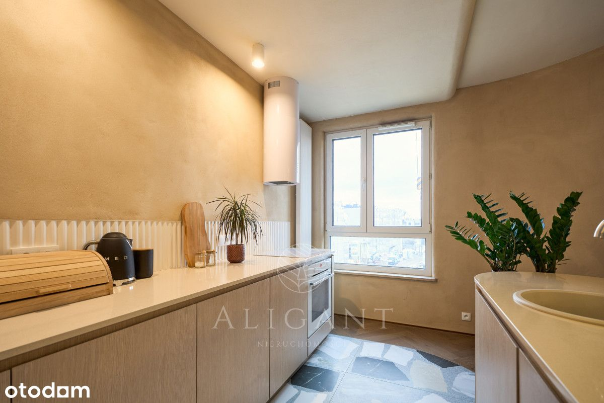
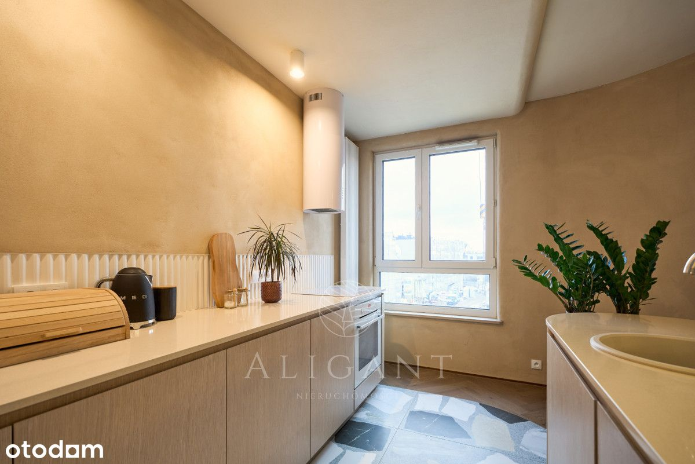
 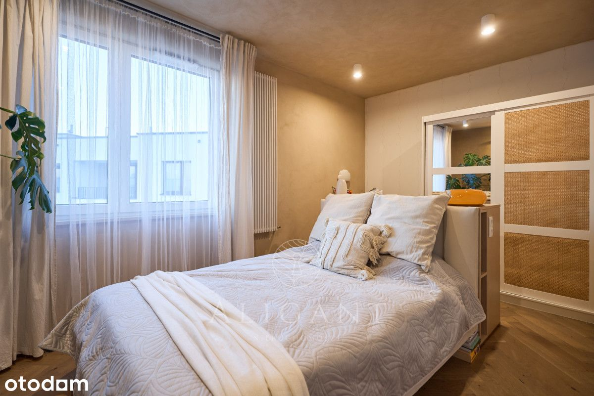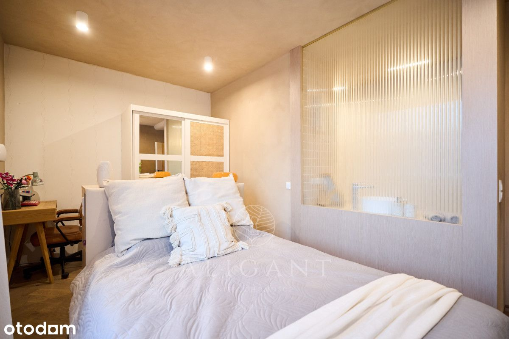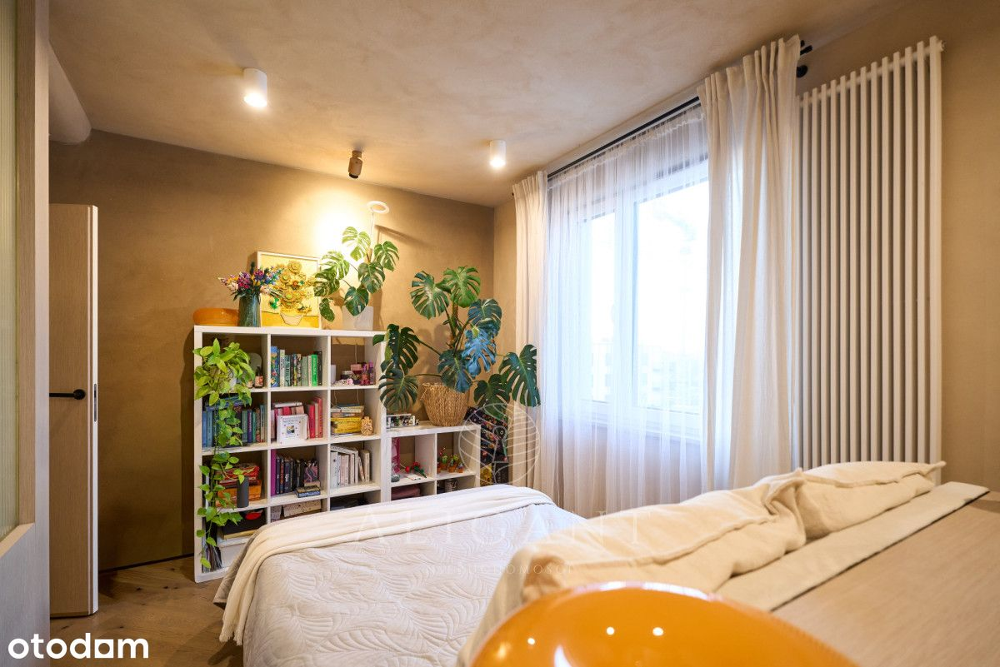
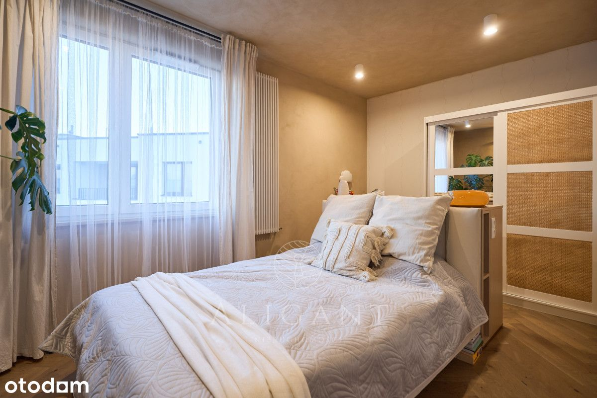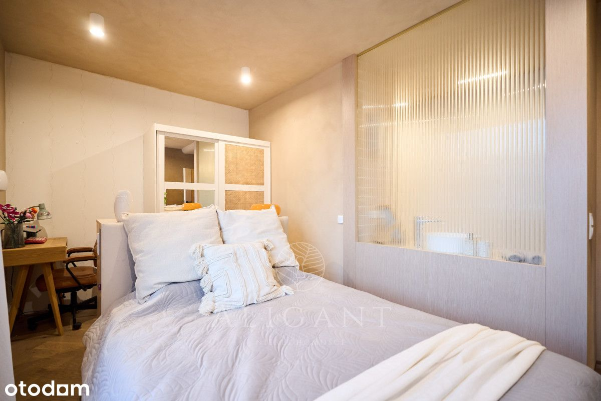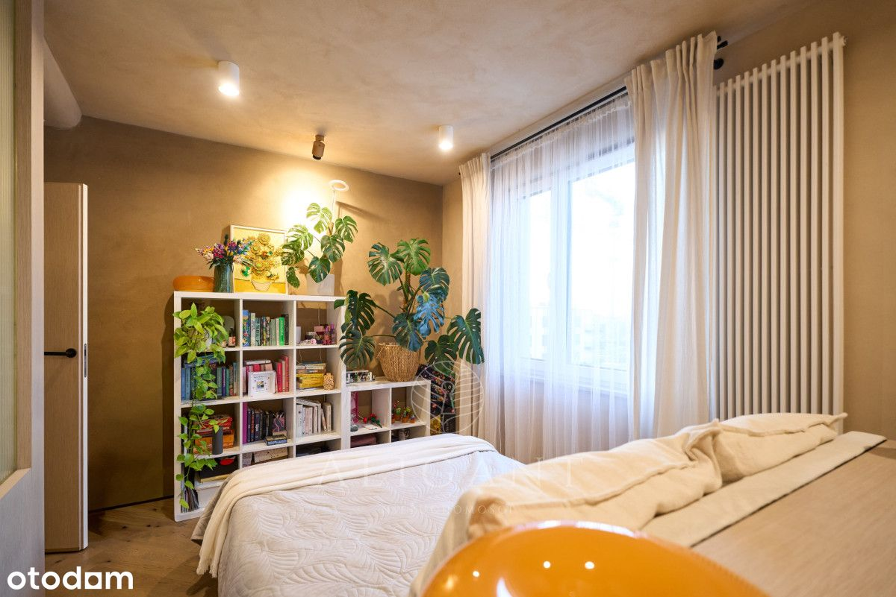
 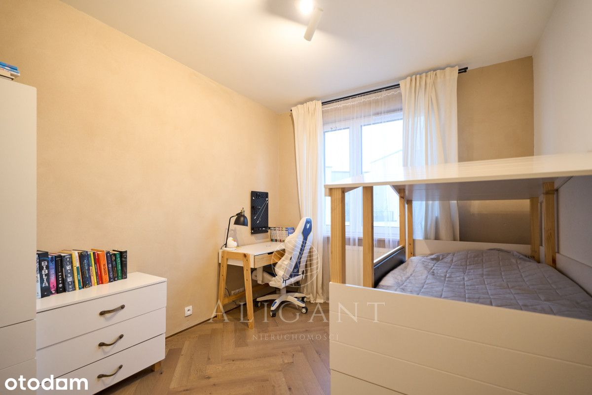
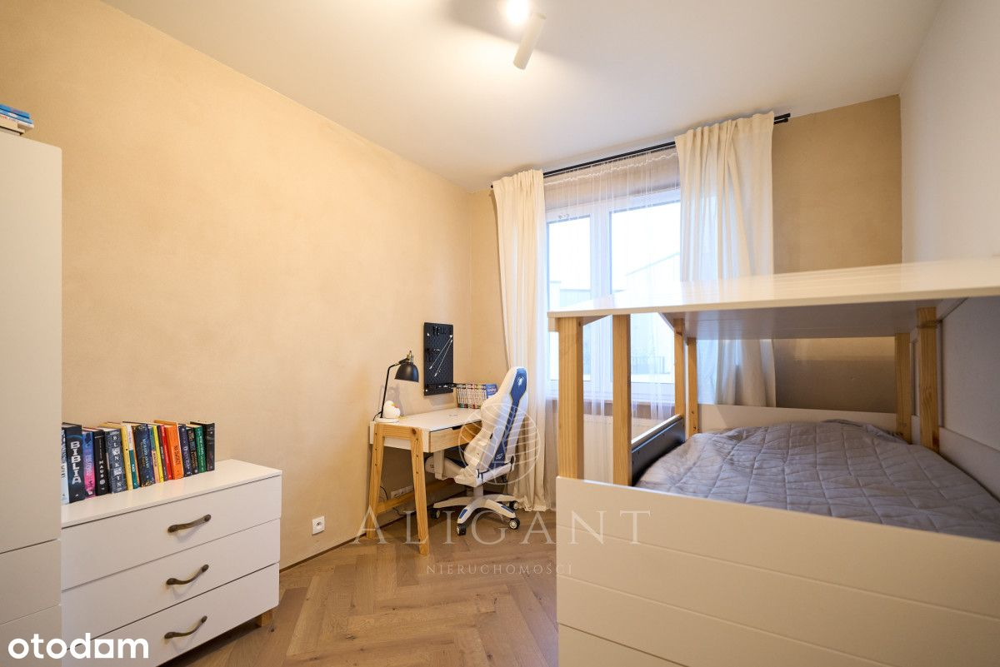
 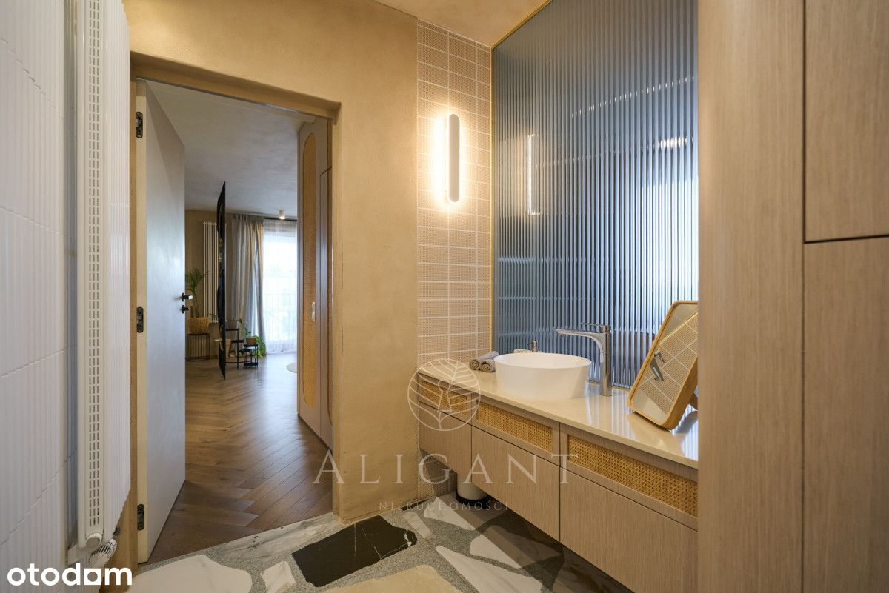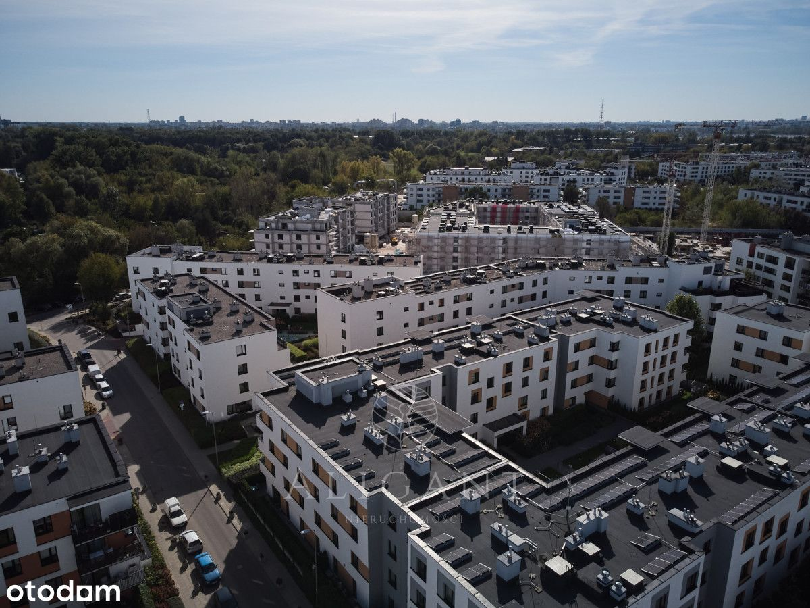
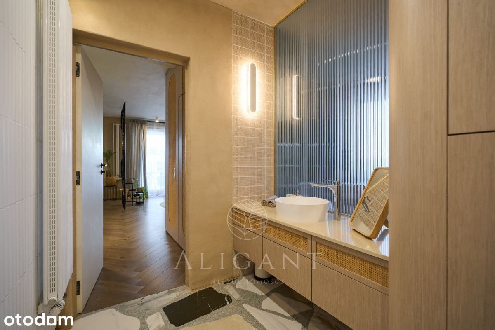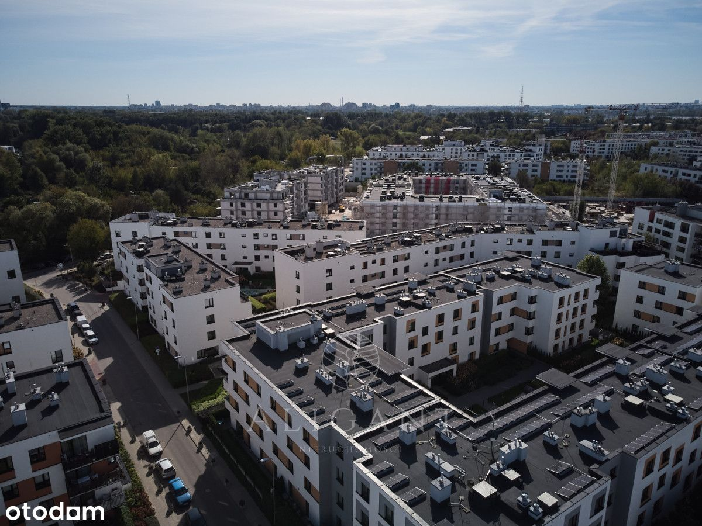